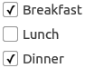

CheckBox QML Type
A checkbox with a text label. More...
| Import Statement: | import QtQuick.Controls 1.4 |
| Since: | Qt 5.1 |
| Inherits: |
Properties
- checkedState : int
- partiallyCheckedEnabled : bool
Detailed Description

A CheckBox is an option button that can be toggled on (checked) or off (unchecked). Checkboxes are typically used to represent features in an application that can be enabled or disabled without affecting others.
The state of the checkbox can be set with the checked property.
In addition to the checked and unchecked states, there is a third state: partially checked. This state indicates that the regular checked/unchecked state can not be determined; generally because of other states that affect the checkbox. This state is useful when several child nodes are selected in a treeview, for example.
The partially checked state can be made available to the user by setting partiallyCheckedEnabled to true, or set directly by setting checkedState to Qt.PartiallyChecked. checkedState behaves identically to checked when partiallyCheckedEnabled is false; setting one will appropriately set the other.
The label is shown next to the checkbox, and you can set the label text using its text property.
Column { CheckBox { text: qsTr("Breakfast") checked: true } CheckBox { text: qsTr("Lunch") } CheckBox { text: qsTr("Dinner") checked: true } }
Whenever a CheckBox is clicked, it emits the clicked() signal.
You can create a custom appearance for a CheckBox by assigning a CheckBoxStyle.
Property Documentation
checkedState : int |
This property indicates the current checked state of the checkbox.
Possible values: Qt.UnChecked - The checkbox is not checked (default). Qt.Checked - The checkbox is checked. Qt.PartiallyChecked - The checkbox is in a partially checked (or "mixed") state.
The checked property also determines whether this property is Qt.Checked or Qt.UnChecked, and vice versa.
partiallyCheckedEnabled : bool |
This property determines whether the Qt.PartiallyChecked state is available.
A checkbox may be in a partially checked state when the regular checked state can not be determined.
Setting checkedState to Qt.PartiallyChecked will implicitly set this property to true.
If this property is true, checked will be false.
By default, this property is false.